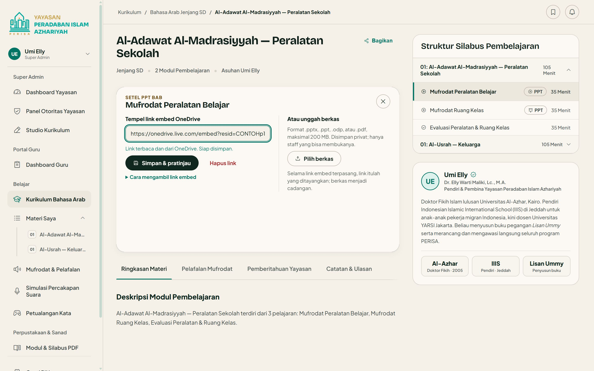
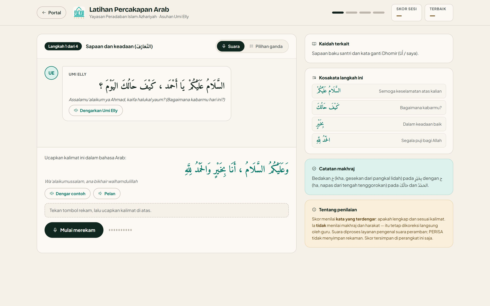
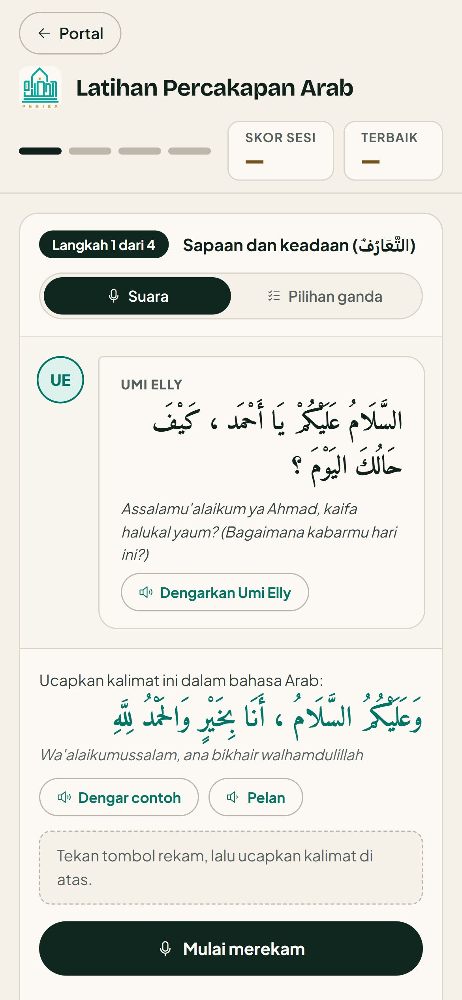
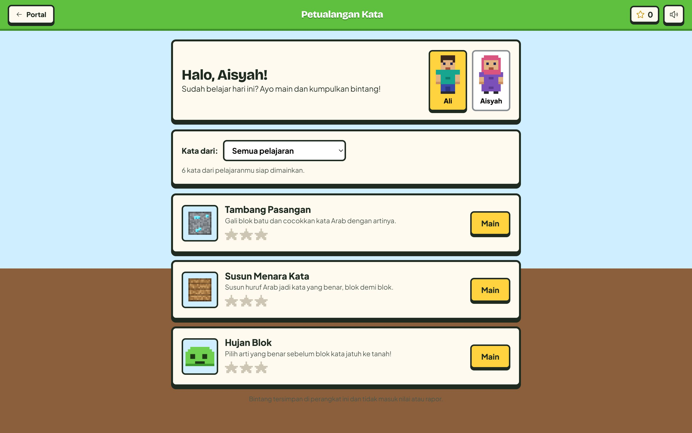
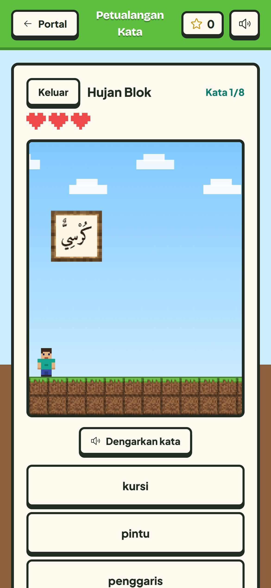

Penawaran sistem digital · Qohiroh Center · Oktober 2026
Dari ruang kelas sampai rumah, terhubung di Qohiroh Center.
Satu platform untuk mengelola kelas, membantu pengajar, dan mendekatkan orang tua dengan pembelajaran anak. Bisa dibuka dari laptop maupun HP.


- Pengelola lebih terarah
- Data peserta, kelas, pengajar, dan tindak lanjut terkumpul di satu tempat.
- Pengajar lebih praktis
- Buka materi, catat pertemuan, dan isi absensi melalui layar yang sama.
- Wali lebih dekat
- Materi jenjang anak dan sertifikat dapat dibuka dari rumah.
- Mudah mulai
- Login nomor WhatsApp dan PIN. Penerapan dimulai dari satu kelas percontohan.
Setiap orang langsung tiba di layarnya sendiri
Begitu masuk dengan nomor WhatsApp dan PIN, aplikasi membuka layar yang memang dibutuhkan orang itu.
-
Super Admin
Tim pengelola Qohiroh Center. Memegang akun, kelas, materi, dan tindak lanjut yang perlu diselesaikan.
-
Guru / Pengajar
Absensi yang belum diisi, kelas yang diampu, dan materi yang siap ditayangkan.

-
Wali
Kabar terbaru, sertifikat ananda, dan materi yang dipelajari di kelasnya.

Lebih sedikit mencari data. Lebih cepat mengambil tindakan.
Pengelola Qohiroh Center mendapat ringkasan kelas, peserta, pengajar, dan kesiapan materi. Kelas tanpa pengajar atau data yang belum lengkap muncul sebagai tindak lanjut dengan tombol langsung ke bagian yang perlu dibuka.
Data bersumber dari pencatatan yang sama di setiap fitur. Saat dashboard dibuka kembali atau disegarkan, ringkasannya mengikuti data terbaru. Tim bisa fokus pada pekerjaan hari itu.
- Ringkasan Aksi cepat dan daftar yang sama, langsung di dalam panel.
- Peserta & Wali Terbitkan akun keluarga, atur kelas dan status peserta.
- Guru Daftarkan guru, internal atau guru mitra.
- Kelas Tugaskan pengajar, isi daftar absen sekaligus.
- Administrasi Pencatatan dan verifikasi infaq tersedia di contoh sistem; kebutuhan pembayaran Qohiroh dibahas saat pemetaan.
- Sertifikat Contoh sistem mendukung 12 level; format dan pemetaan level Qohiroh ditetapkan bersama.
- Laporan Kehadiran per kelas, unduh sebagai CSV.


Materi lembaga tertata, pengajar tinggal membuka.
Tim akademik Qohiroh Center dapat menyusun modul, bab, dan mufrodat melalui Studio Kurikulum. Materi PPT bisa ditayangkan lewat sematan OneDrive, termasuk animasi yang didukung pemutarnya.
- Langsung dari Kurikulum Saat membuka bab, PPT-nya bisa disetel atau diganti di kotak pemutar itu juga.
- Materi PPT Satu layar untuk semua bab, lengkap dengan hitungan bab yang belum siap.
- Draf atau terbit Modul draf belum terlihat oleh wali.
- Impor CSV Mufrodat bisa dimasukkan sekaligus banyak.


Di depan kelas, semuanya sudah siap
Pengajar membuka bab hari itu, memutar pelafalan mufrodat, lalu mengajak peserta berlatih percakapan. Materi asli, rekaman, dan skenario latihan Qohiroh Center disiapkan bersama tim akademik.
Skornya menilai apakah kata-kata yang diucapkan lengkap. Makhraj dan harakat tetap dikoreksi langsung oleh guru, dan rekaman suara tidak disimpan.




Belajar berlanjut lewat permainan kosakata.
Petualangan Kata memberi anak cara lain mengulang mufrodat di rumah. Sumber katanya berasal dari bab yang diterbitkan tim akademik, sehingga latihan bisa mengikuti materi kelas.
- Tambang Pasangan Gali blok batu, cocokkan kata Arab dengan artinya.
- Susun Menara Kata Susun huruf Arab menjadi kata, blok demi blok.
- Hujan Blok Pilih arti yang benar sebelum blok katanya jatuh ke tanah.
Bintang yang dikumpulkan tersimpan di perangkat dan tidak masuk nilai atau rapor. Kalau mufrodat sebuah jenjang belum cukup, permainan memakai kosakata dasar dan menyebutkannya di layar.


Selesai mengajar, catatan kelas langsung rapi.
Cakupan materi, evaluasi hari itu, dan absensi tersimpan per pertemuan. Semua santri sudah ditandai hadir, guru cukup mengubah yang tidak masuk.
Dashboard Guru mengingatkan absensi yang terlewat dan santri yang dua kali alfa dalam sebulan.


Orang tua tahu apa yang dipelajari anaknya.
Satu akun wali dapat membuka kartu masing-masing anak, materi jenjangnya, dan sertifikat yang sudah diterbitkan. Kode QR pada sertifikat membuka halaman verifikasi publik tanpa login.
Akun diterbitkan oleh Super Admin. Wali melihat data anaknya sendiri. Ringkasan kehadiran dan catatan internal guru belum dibuka ke wali; perluasan akses dibahas bersama Qohiroh Center.


Alur penggunaan
Daftar sekali. Pakai setiap hari.
Alur yang mudah dikenalkan kepada tim Qohiroh Center, dari penerbitan akun sampai kabar belajar anak.
- 01
Pengelola menyiapkan
Terbitkan akun pengajar dan wali, susun kelas, lalu tentukan materi yang siap dipakai.
- 02
Pengajar menjalankan
Buka materi di kelas, catat cakupan pembelajaran, lalu simpan absensi pertemuan.
- 03
Pengelola memantau
Baca ringkasan dan laporan kelas. Tindak lanjuti pencatatan yang terlewat dan terbitkan sertifikat.
- 04
Wali mendampingi
Buka materi jenjang anak dan kabar sertifikat dari HP, dengan akun keluarga yang sama.
Mudah dipakai, jelas siapa yang boleh mengakses.
Fondasi yang sudah diterapkan pada contoh sistem, untuk mendukung penggunaan harian tim dan keluarga.
Masuk
Nomor WhatsApp dan PIN 6 sampai 12 angka. Terkunci 15 menit setelah 5 kali salah.
Hak akses
Diperiksa basis data di setiap permintaan: guru hanya melihat kelasnya, wali hanya anaknya.
Di HP
Bisa dipasang seperti aplikasi, dan halaman dasarnya tetap terbuka saat sinyal putus.
Jejak
Perubahan penting, seperti peran dan kategori guru, tercatat di log audit.
Penyimpanan
Data kelas tersimpan terpusat. Pencatatan dan pembaruan data memerlukan koneksi; saat kembali online, pengguna dapat memuat data terbaru.
Mulai dari satu kelas. Kembangkan setelah terbukti membantu.
Usulan penerapan untuk Qohiroh Center dilakukan bertahap. Lingkup, jadwal, dan tanggung jawab tiap pihak disepakati sebelum pengerjaan dimulai.
-
Tahap 1 · Pemetaan
Sesuaikan dengan cara kerja Qohiroh
- Petakan program belajar, jenjang peserta, pembagian kelas, dan kebutuhan laporan.
- Sepakati logo, warna, nama menu, serta bentuk sertifikat Qohiroh Center.
- Tentukan siapa yang mengelola akun, materi, dan administrasi lembaga.
- Susun lingkup pekerjaan, biaya, jadwal, dan kebutuhan layanan pendukung.
-
Tahap 2 · Kelas percontohan
Siapkan materi, dampingi tim
- Masukkan materi awal milik lembaga, data kelas, serta akun pengajar dan wali yang disetujui.
- Kenalkan alur kerja Super Admin dan pengajar melalui sesi pendampingan.
- Uji satu kelas: materi tampil, absensi tersimpan, dan sertifikat dapat diverifikasi.
- Kumpulkan masukan pengguna dan perbaiki hambatan sebelum pemakaian diperluas.
-
Tahap 3 · Penerapan bertahap
Perluas sesuai kesiapan lembaga
- Tambahkan kelas, pengajar, dan akun wali sesuai kebutuhan Qohiroh Center.
- Sepakati pengelolaan harian, pembaruan materi, dan dukungan setelah penerapan.
- Evaluasi fitur tambahan seperti rapor atau notifikasi WhatsApp sebagai pekerjaan lanjutan dengan lingkup dan biaya tersendiri.
Batas penawaran Gambar menunjukkan contoh implementasi yang sudah ada. Penyesuaian identitas, pemindahan data, penyediaan materi, hosting, pencadangan, pelatihan, dan dukungan perlu dicantumkan dalam kesepakatan kerja. Integrasi pembayaran dan WhatsApp otomatis belum termasuk fitur contoh yang ditampilkan.
Mari tentukan bentuk yang tepat untuk Qohiroh Center.
Contoh sistem dapat dicoba sekarang. Untuk menyiapkan penawaran pelaksanaan, pembahasan awal cukup dimulai dari enam kebutuhan berikut.
- Program dan jenjang belajar mana yang akan menjadi kelas percontohan?
- Berapa kelas, pengajar, dan keluarga yang akan memakai sistem pada tahap awal?
- Materi PPT, kosakata, dan rekaman apa yang sudah tersedia dari Qohiroh Center?
- Siapa Super Admin dan penanggung jawab materi di lembaga?
- Bentuk sertifikat, laporan, dan administrasi apa yang paling dibutuhkan?
- Kapan uji coba dimulai, dan dukungan seperti apa yang diperlukan tim?
Beri ruang lebih untuk mengajar.
Coba contoh aplikasi ↗